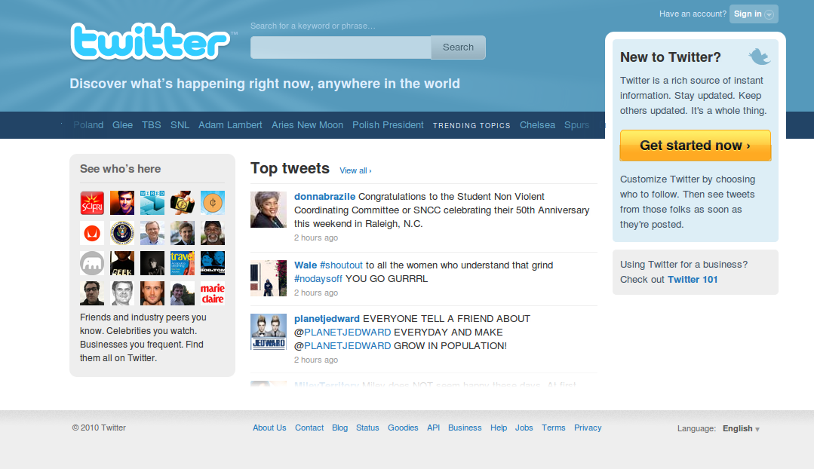

twitter redesign, standalone version
<marquee> tag is evil
 Its always good to start up with an image :P
So as expected, the new twitter home page is here, and along has come a Tsunami of thoughts in my curious brain. Why the fuck did they use the marquee tag ?
Its a small lot, so I'm classifying all I need to say under “ Yack ! ” and “ not so yack ! ”
- The Yacks of new design
- All I found was just one, the marquee tag sucks. Earlier all trending topics were browsable at once, but now we need to wait and look at the horrible text. Ridiculous. -3 for this.
That's it
- The not so Yacks !
- The color combinations is pretty safe and usual. +0 as nothing new.
- The search box is powered with a really cool hover effect, something I've never seen before so +2 for that
- Top tweets as Live on http://www.gowalla.com nothing new, yet looks good. Another +1 for it.
- Look who is here looks nice as well. Good for attracting new users. And the get started now button is OK. Good enough to get another
+1+2 rather.
-
Conclusion
Remove the marquee, you rock. Keep it the way it is “ Boooo! ”
Update
because wind keeps blowing
Its not marquee, its some CSS3 thingie.